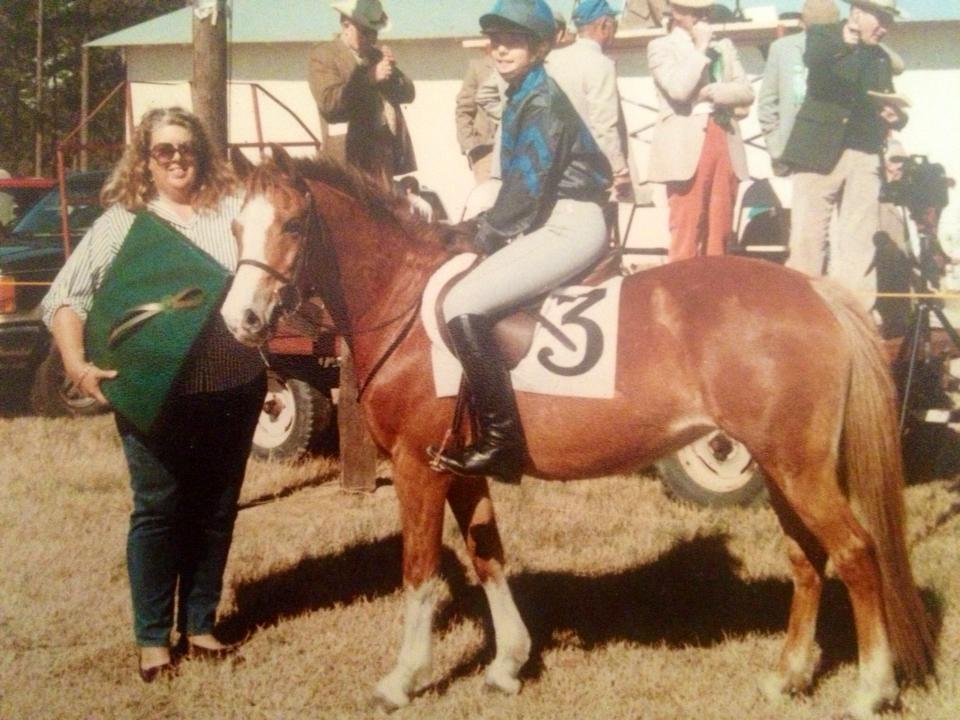

The Ring Rail
Paper soul, pony gossip, tiny history.
Memoirs, pony legends, barn essays, show notes, up-and-comers, trainer spotlights, parent corner, and kind, funny, useful whispers.

MemoirThe pony who made the kid brave
Cute memoirs, outgrown ponies, lease goodbyes, and the stories that linger after the trailer leaves.

Pony LegendsOld names, old programs, real history
Historical show pony facts, old ads, famous ponies, and where they went next.

Up & ComersBefore everybody knows their name
Green ponies, tiny pilots, rising trainers, and pairs quietly turning heads.

Trainer SpotlightGood programs and useful truth
Careful matches, good pony care, and the trainers people trust.

Parent CornerBudgets, nerves, snacks, and love
For the adults holding invoices, schedules, and the spare hairnet.
Heard at the In Gate
Kind, funny, useful whispers.
This is the fun part, but moderated. No minors dragged, no cruelty, no accusations stated as fact. Keep the tea warm, not radioactive.